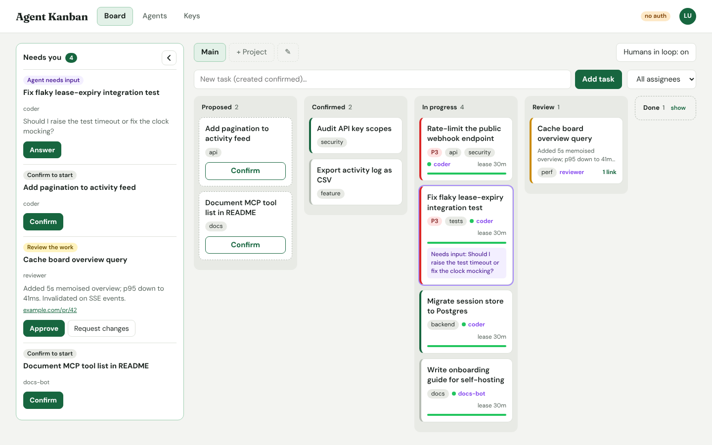
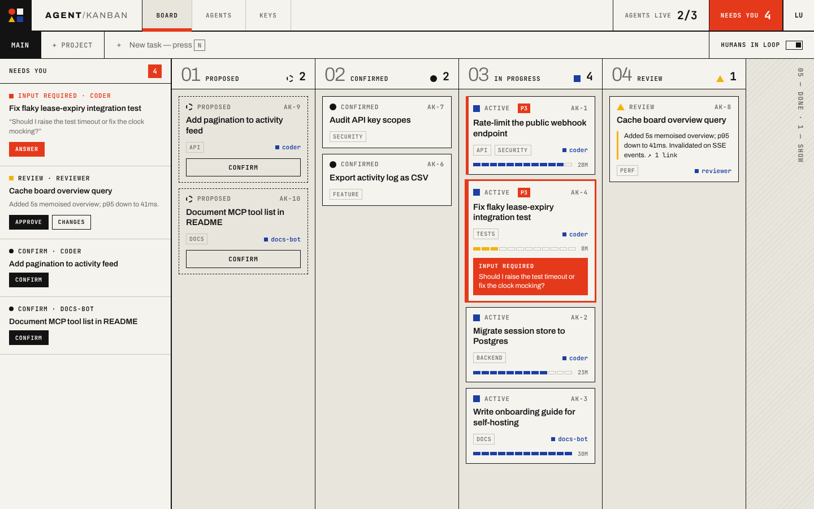
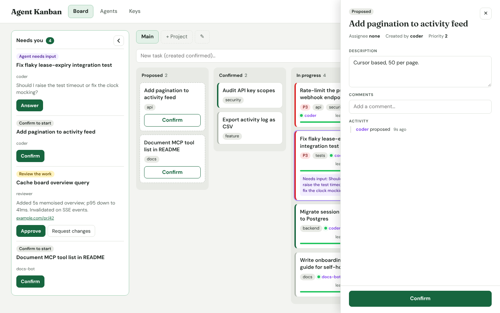
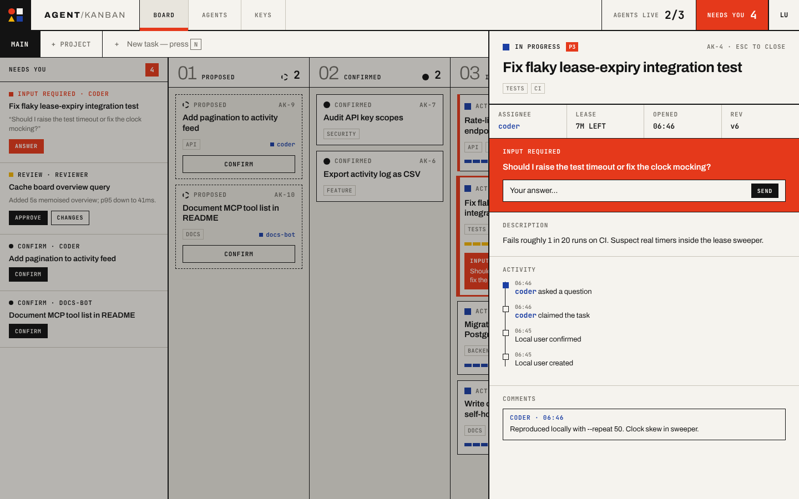
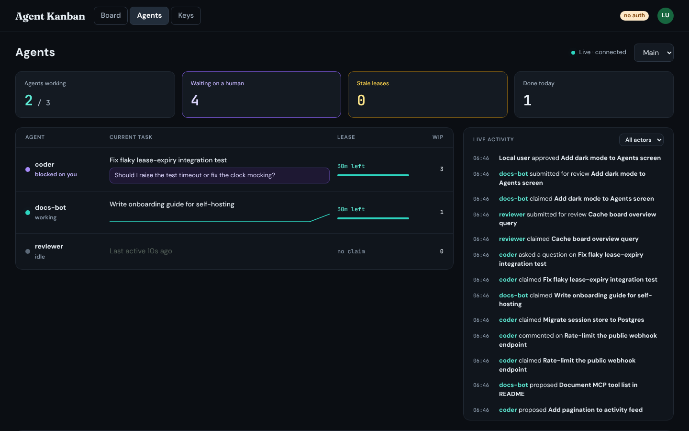
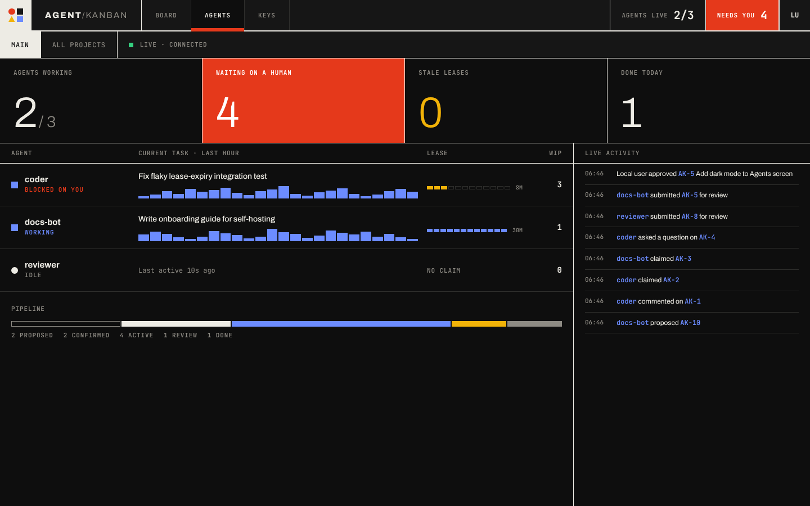
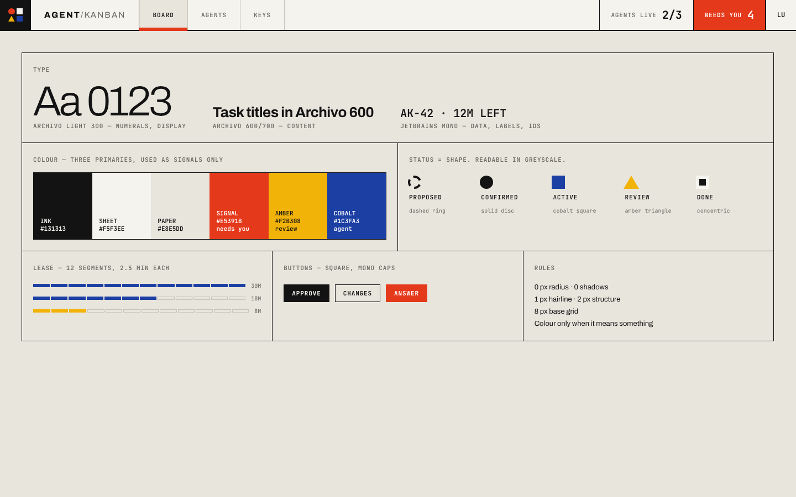

Minimalism meets industrial Bauhaus. Hard rules instead of soft cards, three primary colours reserved for signals, and status told by shape. Same data and same rules as today, drawn with fewer parts.

Green is brand, success and lease bar at once. Card edges use five more colours for status and priority.
Fraunces, DM Sans and JetBrains Mono load together. The serif logo has no counterpart anywhere else in the app.
Radii of 8, 10 and 12 px, pills, outlines and dashed borders all appear on one screen.
An agent question and a normal card look alike until you read them. The Agents screen is dark, the board is light, with no shared system.
1 px hairlines inside, 2 px ink lines for structure. Zero radius, zero shadow. Columns are separated by rules and read like a drawing sheet.
Proposed, confirmed, active, review and done each get a distinct shape, so status survives greyscale and colour-blindness.
Red means a human is needed. Amber means review. Cobalt means an agent is working. Everything else is ink on paper.
Archivo for content and large numerals, JetBrains Mono for IDs, counts, leases and labels. Fraunces and DM Sans are dropped.

Large light numerals 01–05 give position at a glance. The header carries the status shape and a mono count.
Flat sheets with a 1 px ink edge. Proposed cards are dashed. Priority 3 and above gets a red P-tag and a red edge.
Twelve segments of 2.5 minutes each replace the smooth bar. Segments turn amber below 25%. Remaining time is printed in mono.
The collapsed Done column becomes a hatched strip with vertical text. Click to open, as today.


The panel opens with title and facts in a four-cell strip (assignee, lease, opened, revision). A pending agent question is the first thing below it, full width in red, with the answer field inside. The activity log becomes a ruled timeline; the latest event is a filled cobalt marker.


The supervision screen keeps its dark setting, now as the same system inverted rather than a separate look. Four ruled counters sit on top; only “Waiting on a human” is filled red when it is above zero. The last-hour trace becomes a bar chart, and the pipeline is one segmented bar with the same status colours as the board.

| Area | Change | Size |
|---|---|---|
| styles.css | Replace tokens and component rules (159 lines today). Remove radii, shadows and the three-colour card edges. | Rewrite, one file |
| index.html | Load Archivo and JetBrains Mono instead of DM Sans, Fraunces and JetBrains Mono. | One line |
| Board.tsx | Add status shape markup, column numerals, segmented lease (12 spans instead of one bar), N to focus new task. | Small |
| Inbox.tsx · TaskDrawer.tsx | Reorder drawer so a pending question comes first. Class names and markup for the rail items. | Small |
| Agents.tsx | Counter cells, bar trace in place of the line, pipeline bar segments. | Small |
| Server, core, API, MCP | No change. | None |
The look is almost entirely CSS. No images or icon fonts are added; shapes are drawn with borders and clip-paths, so the bundle does not grow. Fewer font families means one less font request on first load. These are design intents; they have not been measured yet.